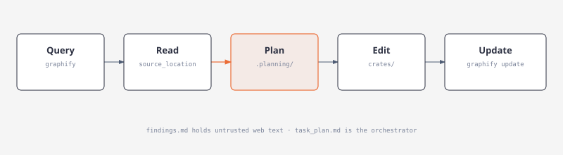

OpenCode V2 workflow
Argos keeps GSD for phases and milestones in .planning/. The project-owned V2 plugins under .opencode/plugins/ add graph-first code navigation, a compatibility bridge for the installed GSD hook scripts, and a small automatic session handoff.
Start with the graph

The tracked code and Cargo dependency graph is graphify-out/graph.json. Before the first broad search in a session, run graphify query "<question>". A successful query unlocks broad search for that session. Scoped source searches are always available. An explicit request to skip graphify bypasses the guard. If the graph is missing or unusable, search remains available and the plugin prints a bootstrap instruction.
Use graphify explain "<concept>" or graphify path "<A>" "<B>" for focused follow-up. After code edits, run graphify update .. Only graph.json, manifest.json, and GRAPH_REPORT.md are tracked; caches and visual output stay local. GSD reads the same graph through .planning/config.json.
Focused ECC commands
| Command | Purpose |
|---|---|
/ecc-plan | Read-only implementation plan from graph and source evidence |
/ecc-review | Read-only correctness review of a diff |
/ecc-verify | Format check, clippy, workspace tests, then graph refresh |
/ecc-checkpoint | Short manual handoff |
/ecc-learn | Proposal for a reusable practice, subject to approval |
ECC planner and reviewer agents inherit the active model. They cannot edit files. The automatic handoff stores at most 500 characters each for the latest request and outcome plus up to 12 paths in OpenCode plugin storage. It loads once in a later session for the same project. It does not replace GSD phase artifacts.
Verify setup
With OpenCode V2 running in this project, inspect /api/plugin for argos.graphify and argos.gsd-v2, /api/command for the five ecc-* commands, and /api/skill for their skills. The incompatible global GSD V1 plugin was moved from ~/.config/opencode/plugins/gsd-core.js to ~/.config/opencode/gsd-core.v1.js; the project-owned V2 bridge still uses the installed GSD hook scripts. A future GSD update may restore the V1 file in the global plugins directory. If the startup error returns, move that restored file out of plugins/ again.
Run node --test .opencode/tests/*.test.mjs to check graph gating, handoff, and GSD bridge behavior.